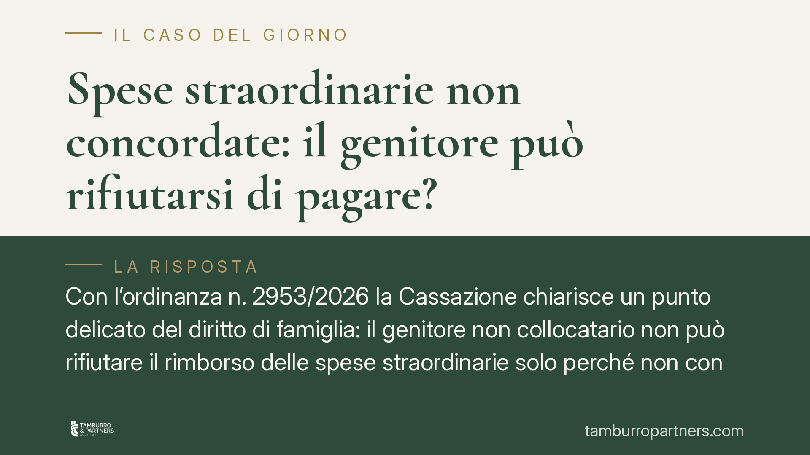

Spese straordinarie non concordate: il genitore può rifiutarsi di pagare?
Con l'ordinanza n. 2953/2026 la Cassazione chiarisce un punto delicato del diritto di famiglia: il genitore non collocatario non può rifiutare il rimborso delle spese straordinarie solo perché non concordate. Se la spesa risponde all'interesse del figlio ed è economicamente sostenibile, la quota va comunque pagata. Un principio che pesa su migliaia di famiglie separate.

Il caso
La vicenda nasce da un contrasto frequente dopo la separazione o il divorzio. Un genitore, quello che convive stabilmente con il figlio (il cosiddetto genitore *collocatario*), sostiene una spesa straordinaria e ne chiede il rimborso pro quota all'altro genitore. Quest'ultimo si oppone: la sentenza prevedeva che le spese straordinarie fossero concordate in anticipo, e questa concertazione non c'è stata.
La Corte di Cassazione, Sezione I civile, con l'ordinanza n. 2953/2026, ha respinto questa linea difensiva. La mancata concertazione preventiva non trasforma il genitore non collocatario in titolare di un potere di veto sulle scelte relative al figlio.
Inquadramento normativo
Le spese straordinarie sono quelle non ricomprese nell'assegno di mantenimento ordinario: esborsi non prevedibili, non periodici o comunque di importo rilevante rispetto alla gestione quotidiana (spese mediche non coperte dal sistema sanitario, attività sportive strutturate, viaggi di studio, tasse universitarie).
Il principio di riferimento resta l'art. 337-ter del Codice civile, che ancora ogni decisione all'interesse morale e materiale del minore e impone a entrambi i genitori di provvedere al mantenimento in misura proporzionale al reddito. La clausola di concertazione preventiva, spesso inserita nelle sentenze e negli accordi, ha una funzione organizzativa: serve a favorire il dialogo, non a subordinare i bisogni del figlio al consenso di un genitore.
La Cassazione qualifica quindi la concertazione come un onere di comportamento, non come una condizione di esistenza del diritto al rimborso. In assenza di accordo, il giudice valuta a posteriori due elementi: se la spesa risponde all'interesse effettivo del figlio (il requisito di *utilità*) e se è proporzionata alle condizioni economiche delle parti (il requisito di *sostenibilità*).
Cosa cambia in concreto
Per il genitore collocatario il principio riduce il rischio di restare da solo a coprire spese decise in autonomia. Se la scelta è ragionevole e coerente con la vita del figlio, l'altro genitore dovrà rimborsare la propria quota anche senza accordo preventivo.
Per il genitore non collocatario cade l'idea che il richiamo alla concertazione basti a bloccare qualsiasi richiesta. Resta però uno spazio di difesa concreto: può contestare che la spesa fosse davvero utile per il figlio, oppure che fosse sproporzionata rispetto al proprio reddito. Il dissenso motivato conserva quindi valore, ma va argomentato nel merito.
Attenzione a una precisazione: il principio non è una licenza a spendere. Il genitore che agisce senza confronto si assume il rischio del giudizio successivo. Se la spesa viene ritenuta superflua o eccessiva, il rimborso può essere negato in tutto o in parte.
La regola vale anche quando il figlio è maggiorenne ma non ancora economicamente autonomo, situazione in cui l'obbligo di mantenimento prosegue.
Cosa fare in concreto
- Conservate ogni documento relativo alle spese straordinarie: fatture, ricevute, iscrizioni, referti. La prova documentale è decisiva sia per chiedere sia per contestare il rimborso.
- Comunicate per iscritto la spesa all'altro genitore prima di sostenerla, quando possibile. Anche una mail o un messaggio tracciato dimostra il tentativo di concertazione e rafforza la vostra posizione.
- Verificate la clausola contenuta nella vostra sentenza o nel vostro accordo: alcune distinguono le spese che richiedono consenso obbligatorio (viaggi, scuole private) da quelle che non lo richiedono (spese mediche urgenti).
- Motivate sempre il dissenso, se ricevete una richiesta che ritenete ingiustificata: indicate perché la spesa non era utile o non era sostenibile. Un silenzio o un rifiuto generico è debole in giudizio.
- Valutate una revisione delle condizioni se i contrasti sono ricorrenti: un protocollo chiaro sulle spese straordinarie riduce il contenzioso futuro.
Consigliamo di affrontare queste dinamiche con un confronto tecnico preventivo, perché la linea tra spesa dovuta e spesa contestabile dipende dai dettagli del singolo caso.
---
*Contributo informativo a cura di Tamburro & Partners - Avv. Giuseppe Tamburro. Non costituisce parere legale.*
Ogni famiglia ha il suo equilibrio.
Separazione, divorzio, affidamento, assegno: se vuoi un confronto riservato su una specifica situazione, scrivi allo studio. Ti rispondiamo entro un giorno lavorativo.